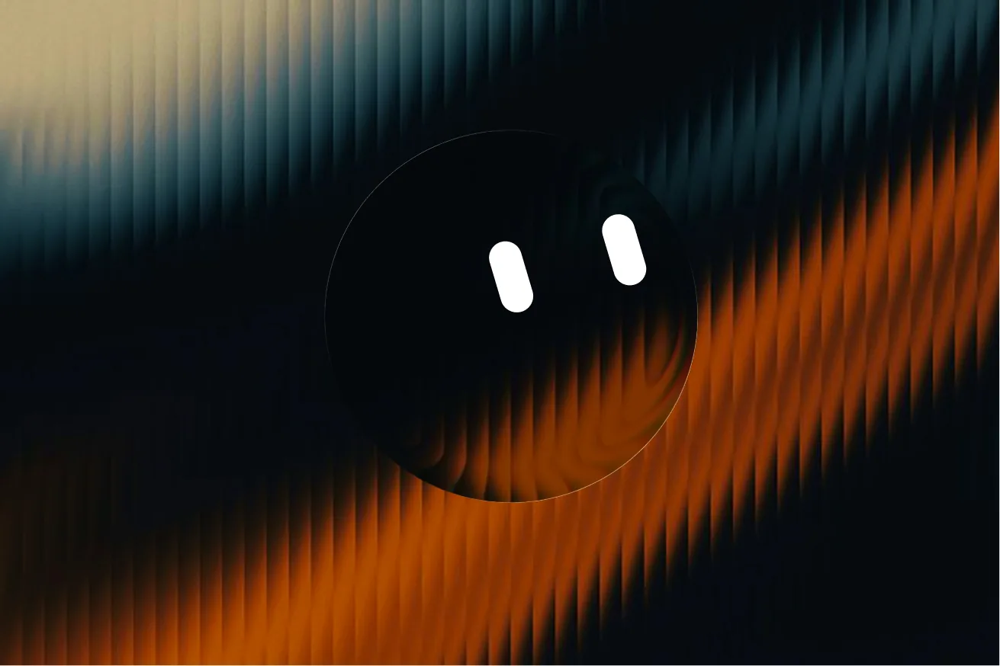
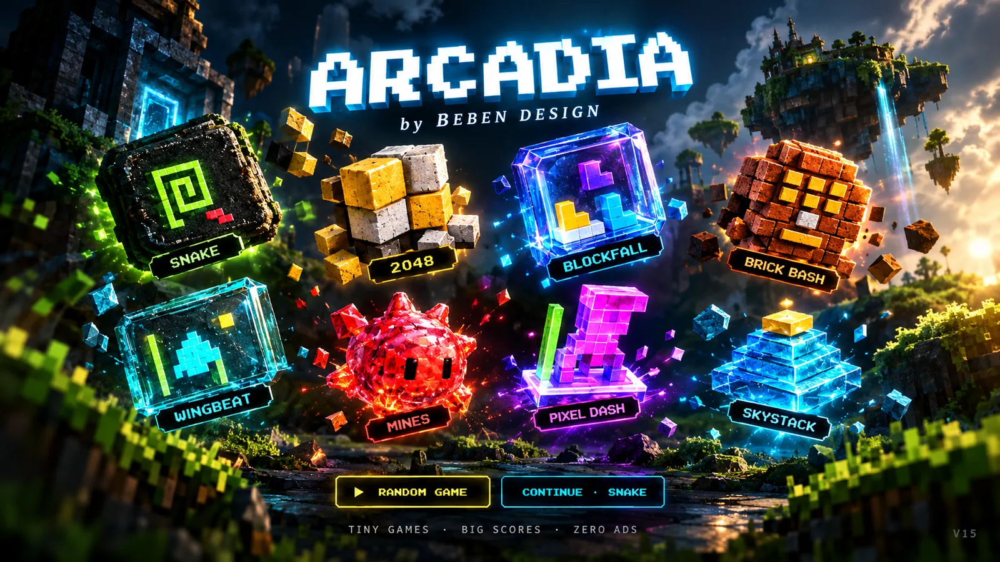

Design logic before
the first line of code.
Design and product work for people who need the thing to actually work, not just look good in a screenshot. Your idea becomes a clear, usable system long before development begins.
From ideas to tangible products.
- 01 Websites High-performance digital homes for brands, products and businesses, designed around clarity, speed and conversion.
- 02 UX Research Evidence-led research that turns uncertain product decisions into clearer direction.
- 03 Mobile UI iOS and Android interfaces designed around real interaction patterns, not just smaller screens.
- 04 Desktop App UI Interfaces for serious software: dense, focused and built for people who use the tool all day.
- 05 HMI Interfaces between people and machines, designed for hardware where clarity and response matter.
- 06 Branding Visual systems that make a new business or product recognizable, coherent and worth remembering.
AI where it actually earns its place.
Your website, web app, desktop tool or internal system can use AI to guide visitors, qualify leads, surface answers and take on repetitive work. Sprite, the guide on this site, shows the pattern: an assistant that helps people find things, backed by an offline floor for when the network is gone. AI goes where it removes friction or clears a workflow. Everywhere else, it stays out.
Put AI to work.Thinking in pixels
Every project here shows its working. Not the final renders, but the decisions, the iterations, and the reasoning that got there.

Sprite
Find answers and get around this site with a guide that pairs a live AI brain with an offline engine, so you still get help when the network drops.
open case studyCodex
Search a sprawling offline archive in milliseconds. Your collection rebuilt into plain SQLite with ranking tuned for usefulness, no server needed.
open case study
Arcadia
Play 20 games offline in one installable catalogue. Every game keeps working with the network gone, built cache-first from the first line.
open case studyFront-end development process
Stripping the project to its core objectives.
Mapping out user journeys and information architecture.
Validating interactions before committing to code.
Ensuring logic holds from 320px to 4K.
Stress-testing against edge cases and bottlenecks.
Monitoring real-world usage and adjusting.
This site is the demo
A studio can claim anything about the sites it builds. Here is the alternative: every figure below is counted off this site's own source when the page is built, and the source is public. Pick one and check it.
- - [x] 4 tools that run in the browser. Nothing you paste leaves the tab.
- - [x] 20 games at one address, installable, playable in airplane mode.
- - [x] 3 case studies, every figure re-run from source before it was published.
- - [x] 5 blog posts on how the things above were built.
- - [x] 1 person doing the design, the code and the writing.
Counted by scripts/build_status.py, in a public repository. If a number here is wrong, it takes about a minute to prove it.
The stack behind your build
- HTML/CSS
- React
- Python
- SQLite
- Rust


Technology serves design decisions.
Industries served
Cooperation models
Full Studio Lead
One studio owns your project from discovery to handoff.
Team Augmentation
Integrating as an extension of your internal team.
Long-term Partnership
Ongoing support for evolving products.
FAQ
Foundations starts at $99 USD: a simple static site for a startup, a new business, or a campaign that needs to exist properly online before it needs anything complex. Everything larger is quoted as a fixed-price, line-item proposal after a discovery call, so you can see what each part costs and remove anything you do not want. No hourly billing.
Frequently. You get a "Minimum Viable Design": the smallest version that still looks and works like a serious product, so you can launch quickly and professionally.
Yes, and it starts with a UX audit that identifies what is actually broken. Otherwise a redesign just paints over the functional problems you already have.
Yes, and it is disclosed. AI is used inside the studio workflow where it speeds up production. The studio stays accountable for everything shipped.
Pretty low-drama. Expect clear thinking, direct feedback, a lot of iteration, and the occasional rabbit hole when a detail turns out to matter. No corporate theatre, no mysterious circle-back rituals.
Let's talk about your project
No aggressive sales pitch. Just a technical discussion about your goals.